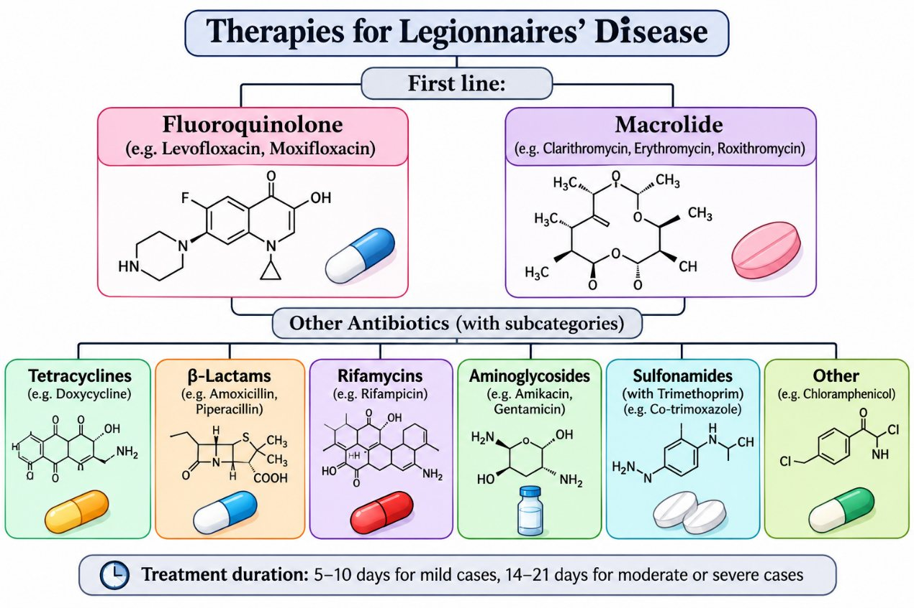

Although Legionnaires' disease can manifest with many unpleasant symptoms, accurate and timely diagnosis leads to appropriate treatment. One of the treatment methods for the first-line of the Legionnaires' disease involves antibiotic-specifically, either a fluoroquinolone (levofloxacin or moxifloxacin) or a macrolide, preferably azithromycin (Moretti et al., 2023; Viasus et al., 2022). Some other antibiotics that also help in treating this disease are ciprofloxacin, moxifloxacin, and doxycycline (other fluoroquinolone) and clarithromycin, erythromycin, and roxithromycin (other macrolides). Although treatment with moxifloxacin might be sufficient to manage the disease, as it provides inadequate coverage against aerobic microorganisms, this particular antibiotic has been studied less extensively compared to other antibiotics that have been mentioned (Moretti et al., 2023). Another monotherapy used in some countries is Spiramycin In cases where intravenous azithromycin is not available (Rello et al., 2024). The duration of treatment with fluoroquinolones and macrolides ranges from 5 to 10 days for mild cases and 14 to 21 days for moderate or severe cases. The duration of the treatment depends on the severity of the disease (Animalu., 2026).

(Created by Biorender)
For the second-line treatment against L pneumoniae tetracyclines such as tigecycline have been used. Nevertheless, it does not seem to be as effective against L longbeachae. Therefore, it is important to test the strains, in order to avoid incorrect medication (Animalu., 2026).
In cases where Legionnaires' disease is moderate or severe and required hospitalisation, as well as in patients who cannot take oral medication, treatment is administered intravenously. The medication typically used is fluoroquinolone (Animalu, 2026).
Table 1: Recommended medication and their dosage for severe Legionnaires' disease.
| Preferred options | Azithromycin 500 mg intravenous daily. |
| Preferred options | Levofloxacin 750 mg intravenous once daily or 500 mg. |
| Alternative options | Clarithromycin 500 mg intravenous. |
| Alternative options | Spiramycin 3 M UI intravenous × 3/day. |
(Rello et al., 2024)
Although therapeutic interventions can be used individually, a combination of treatments is also possible. Whereas it is not the preferred approach and is used only in cases where monotherapy has failed, some studies have shown that the combination of levoforaxine and rifampicin exhibits synergy (Viasus et al., 2022). Another combination of treatments administered by specialists is ceftriaxone with macrolides (such as azithromycin) for the first days. Finally, another combination, which has been shown in studies to be effective for the treatment of specific legionella categories, is the use of macrolides in combination with beta-lactams (Kutsuna et al., 2024). However, according to other studies, combination therapy, especially with quinolones and macrolides not only fails to prove any benefits to patients, but may also entail significant drawbacks, due to the adverse effects associated with administration of each antimicrobial agent (Kutsuna et al., 2024; Viasus et al., 2022). Monotherapy reduces toxicity and is often more effective than combination therapy (Moretti et al., 2023).
References
- Animalu, C. N. (2026, March 9). Legionnaires Disease Treatment & Management: Approach considerations, Prehospital and emergency department care, inpatient care. Medscape.Com; Medscape. https://emedicine.medscape.com/article/220163-treatment
- Kutsuna, S., Ohbe, H., Matsui, H., & Yasunaga, H. (2024). Analysis of the effectiveness of combination antimicrobial therapy for Legionnaires" disease: A nationwide inpatient database study. International Journal of Infectious Diseases, 142, 106965. https://doi.org/10.1016/j.ijid.2024.02.008
- Moretti, M., De Boek, L., Ilsen, B., Demuyser, T., & Vanderhelst, E. (2023). Therapeutical strategies in cavitary legionnaires" disease, two cases from the field and a systematic review. Annals of Clinical Microbiology and Antimicrobials, 22(1), 105. PubMed Central. https://doi.org/10.1186/s12941-023-00652-5
- Rello, J., Allam, C., Ruiz-Spinelli, A., & Jarraud, S. (2024). Severe Legionnaires' disease. Annals of Intensive Care, 14(1), 51. https://doi.org/10.1186/s13613-024-01252-y
- Viasus, D., Gaia, V., Manzur-Barbur, C., & Carratalà, J. (2022). Legionnaires' Disease: Update on diagnosis and treatment. Infectious Diseases and Therapy, 11(3), 973–986. https://doi.org/10.1007/s40121-022-00635-7